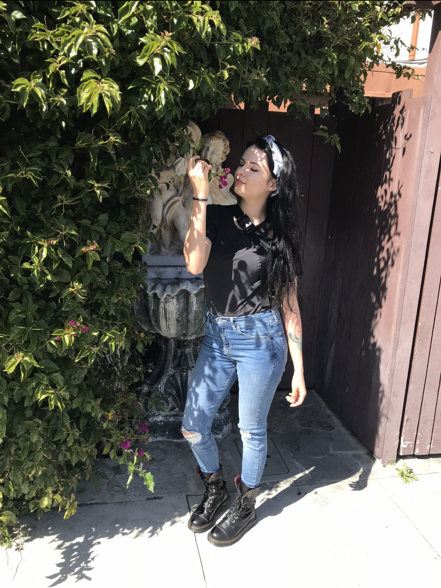

About me
Hi, I am Sam! A bilingual, 2nd generation Latina native to the San Francisco Bay Area.
I have always been one chasing the creativity in this world. Growing up, I would love
to create and help others.
My internet life started when I was just 9years old and
I got to pick out my first computer at the Gateway store. I remember it vividly as it
came in a huge cow print box!
Fast forward a few years when Myspace popped up, my 12 year old self started spending
time trying towork with the layout codes so I could come up with cool looking porfolios.
Thats where the interest for design first began. The first time I interacted with code,
to create simple layouts and learning to understand the code behind designs.
I had no idea that later on in my 20’s I would come back to something similar and fall
in love. I decided to take the self-taught route and learn how to code in 2020 in the midst
of our Global Pandemic and quarintine life. COVID caused me to be laid off. This is where I
started to believe I wanted so much more than what I was currently doing.
Today, I am a self-taught Web Designer & Developer. Using HTML, CSS, and Javascript.
With a drive to help people and seeking opportunities for growth and creation!
Stay updated on what I am currently doing.
Follow my journey on Instagram to stay updated @iam.sam.codes
